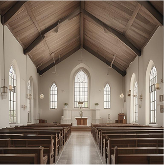

Embrace your faith at Christ
Victory Baptist Church
April 17, 2025 by Christ Victory Baptist Church
Are you searching for a place to deepen your spiritual journey? Look no
further! At Christ Victory Baptist Church, we invite you to join us as we
embrace our faith together, fostering a sense of belonging and purpose.
Whether you're new to the area or seeking a fresh start in your walk with
God, our church offers a welcoming environment where everyone can find
their spiritual home. Come experience the warmth of our congregation
and discover how we can uplift one another in our faith.
At Christ Victory Baptist Church, we believe in the power of community and
the importance of strengthening our faith through meaningful worship
and fellowship. Our uplifting services and engaging teachings not only
inspire individuals but also encourage us to grow together in Christ. When
you join us, you'll connect with a vibrant community committed to
supporting one another in life's ups and downs. Together, we can embark
on a transformative journey that will enrich your spiritual life and
strengthen your connection to God.
Discover your spiritual home: Join us at Christ
Victory Baptist Church
At Christ Victory Baptist Church, we invite you to discover a place where
your faith can flourish and your spiritual journey can take flight. Our doors
are open to everyone seeking a deeper connection with God and a
supportive fellowship. Join us at Christ Victory Baptist Church to
strengthen your faith and connect with a vibrant community that
celebrates diversity while united in purpose. Whether you are new to the
faith or have been on this path for years, you will find a warm welcome
and a nurturing environment to explore your beliefs.
As you step into our church, you’ll feel the love and warmth radiating from
our congregation. We understand the importance of belonging to a
community that shares your values and beliefs. Here, you can engage in
meaningful conversations, build lasting friendships, and participate in
various church activities that enrich your spiritual life. Come and see how
Christ Victory Baptist Church can be your spiritual home—a place where
you can grow in your faith while making lifelong connections with others
who are on a similar journey.
Strengthen your faith through uplifting
worship and teachings
At Christ Victory Baptist Church, we believe that worship is a powerful way
to strengthen your faith. Our vibrant services are designed to inspire and
uplift, featuring heartfelt music, engaging sermons, and moments of
prayer that resonate deeply with attendees. Each Sunday, we gather in a
spirit of unity, allowing the uplifting melodies and impactful messages to
invigorate our souls. Whether you are a lifelong believer or recently
exploring your faith, you will find that our worship services nurture a
profound connection with God and foster spiritual growth.
In addition to our Sunday services, we offer a variety of Bible studies and
educational programs to deepen your understanding of scripture. Our
dedicated pastors and knowledgeable leaders provide insightful
teachings that encourage questioning, reflection, and discussion. By
participating in these enriching experiences, you will not only enhance
your spiritual knowledge but also cultivate a personal relationship with
God. Join us at Christ Victory Baptist Church to find inspiration in our
worship and teachings, allowing your faith to flourish and thrive in a
supportive environment.
Connect with our vibrant community and
grow together in Christ
At Christ Victory Baptist Church, we believe that fellowship is essential for
spiritual growth. When you join us, you’ll find a welcoming community
ready to embrace you with open arms. Engage in meaningful
conversations, share your experiences, and build lasting friendships with
fellow believers. Our various small groups and ministry teams provide
opportunities to connect, serve, and grow alongside one another, creating
a sense of belonging that nurtures your faith journey.
As you participate in church events, Bible studies, and volunteer
opportunities, you will discover the power of community in strengthening
your faith. These experiences foster not only personal growth but also
support and encouragement during life’s challenges. We invite you to join
us at Christ Victory Baptist Church and take part in our vibrant community,
where together, we can uplift one another and grow closer to Christ.
Embrace the joy of fellowship and let your faith flourish in a supportive
environment!